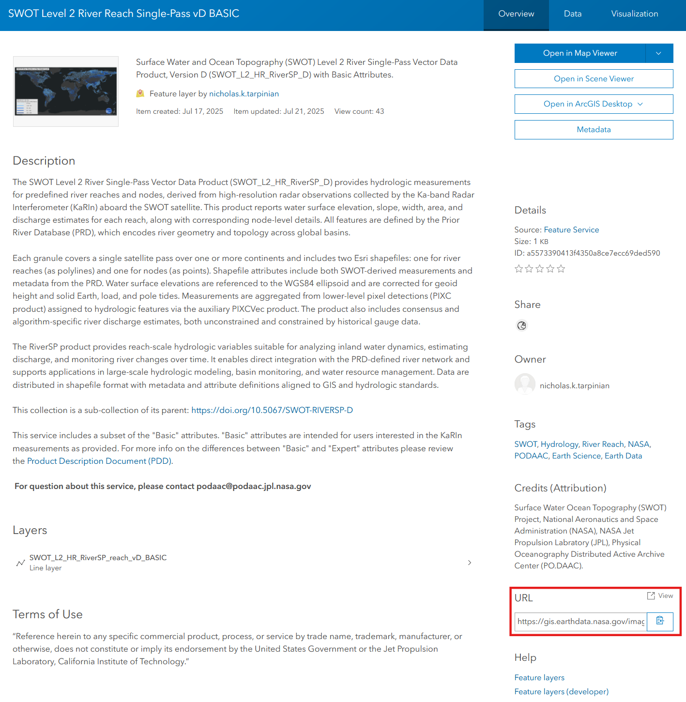
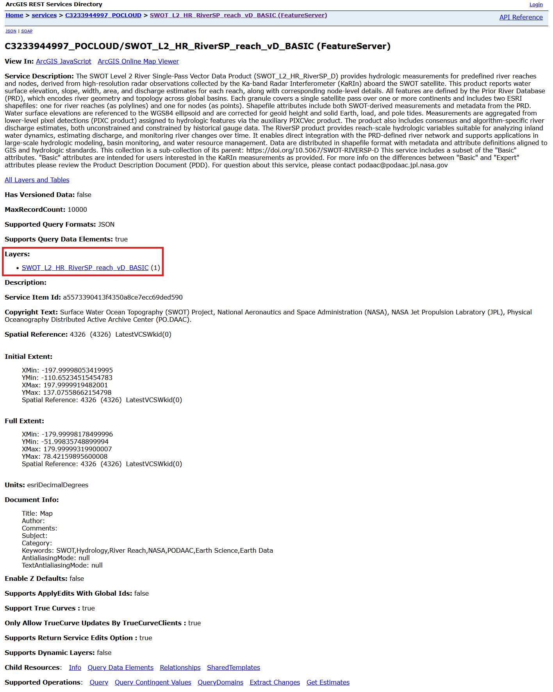
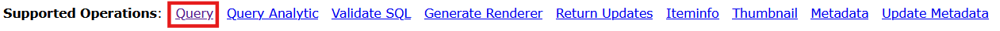
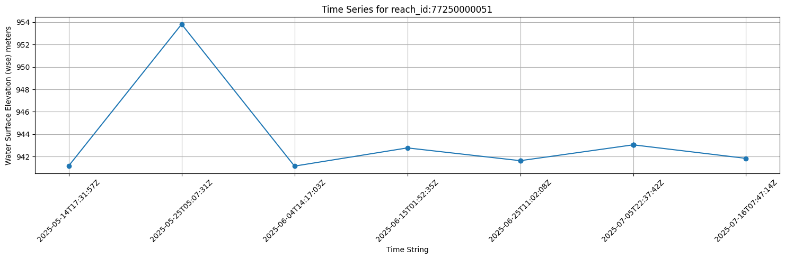
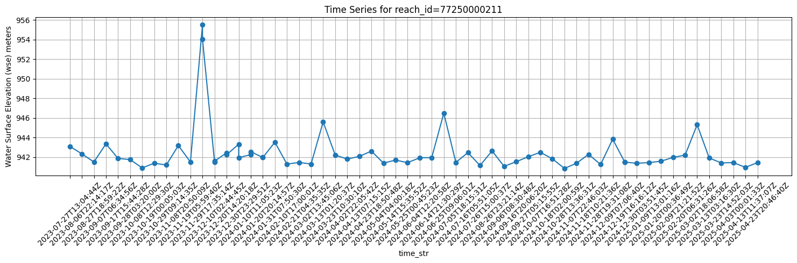

import leafmap
import requests
import ipysheet
import pandas as pd
import matplotlib.pyplot as pltEarthdata GIS SWOT Rivers Feature Service Access - Programmatic
Authored by Nicholas Tarpinian, PO.DAAC
Summary
The following instructions describe how to connect to Earthdata GIS (EGIS) endpoints programattically. This guide shows how to connect to the recently released Surface Water and Ocean Topography (SWOT) Feature Service of the SWOT_L2_HR_RiverSP_D River Reach collection.
For more details on these services and the latest available services, please visit the EGIS SWOT Feature Service page:
SWOT_L2_HR_RiverSP_reach_vD_BASIC
Learning Objectives:
- Connecting to the SWOT Rivers Feature Service with Python.
- Exploring the collection and plotting through an interactive map GUI.
- Querying the service through different parameters.
- Creating a time series plot.
Import libraries
The SWOT Rivers Feature Service endpoint can be queried through the ArcGIS REST endpoint. To reach the query URL of the service, first open the URL endpoint by selecting ‘View’ in the bottom right corner of the service landing page under ‘URL’ and then select the feature service layer, as shown below:


Next all the way at the end of the webpage you will reach the Supported Operations section which is where you will select Query. That query URL will now be used to search through the feature service.
https://gis.earthdata.nasa.gov/image/rest/services/C3233944997_POCLOUD/SWOT_L2_HR_RiverSP_reach_vD_BASIC/FeatureServer/1/query

We will utilize the Python package leafmap to plot data pulled through the service onto an interactive map.
You can use bbox finder to search for an area of interest, which helps in getting a quicker response time.
Here we will be searching for Lake Powell, USA.
bbox = "-112.188137,36.323246,-109.644802,37.995725" # xmin,ymin,xmax,ymax
url = "https://gis.earthdata.nasa.gov/image/rest/services/C3233944997_POCLOUD/SWOT_L2_HR_RiverSP_reach_vD_BASIC/FeatureServer/1/query"
params = {
"where": "1=1",
"outFields": "*", # '*' returns all fields or can specify specific fields
"geometry": bbox,
"geometryType": "esriGeometryEnvelope",
"inSR": "4326",
"spatialRel": "esriSpatialRelIntersects",
"f": "geojson",
"resultRecordCount": 10000, # max record number of features server can return
}
response = requests.get(url, params=params)
geojson = response.json()
print("Status code:", response.status_code)
print("response:", response.text[:500])Status code: 200
response: {"type":"FeatureCollection","features":[{"type":"Feature","id":370332,"geometry":{"type":"LineString","coordinates":[[-110.47415790399998,37.256347604000041],[-110.47313850199998,37.256992075000028],[-110.47245964499996,37.257313554000064],[-110.47144021599996,37.257958011000028],[-110.46973923199994,37.259302495000043],[-110.46837650099997,37.26064847300006],[-110.46769682999997,37.261078088000033],[-110.46599990999999,37.261827616000062],[-110.46532021499996,37.262257217000069],[-110.464299508# Creates a map with the queried data with leafmap
m = leafmap.Map(center=[37.05, -111.3], zoom=10)
m.add_geojson(geojson, layer_name="Lake Powell Features")
mWe can also search by a specific river name, for example the Colorado River. (River names are found in the attribute table, or also in the SWORD database https://www.swordexplorer.com/)
url = "https://gis.earthdata.nasa.gov/image/rest/services/C3233944997_POCLOUD/SWOT_L2_HR_RiverSP_reach_vD_BASIC/FeatureServer/1/query"
params = {
"where": "river_name='Colorado River'", # Change to your river reach of interest
"outFields": "*",
"f": "geojson",
"resultRecordCount": 10000
}
response = requests.get(url, params=params)
geojson = response.json()
print("Status code:", response.status_code)
print("response:", response.text[:500])Status code: 200
response: {"type":"FeatureCollection","features":[{"type":"Feature","id":13817,"geometry":{"type":"LineString","coordinates":[[-115.05913648399996,32.000165692000053],[-115.05935570299999,31.99980826500007],[-115.05967313099995,31.999813122000035],[-115.05966515199998,32.000191820000055],[-115.05974486099996,32.000427547000072],[-115.05975424599995,32.000986902000079],[-115.05986982199994,32.001529841000036],[-115.06011237299998,32.002074723000078],[-115.06048304099994,32.002567447000047],[-115.0609852449m = leafmap.Map(center=[40, -100], zoom=5)
m.add_geojson(geojson, layer_name="Colorado River Features")
mNext example shows how to plot a specific river reach based on its reach_id and create a time series chart.
reach_id_value = 77250000051
url = "https://gis.earthdata.nasa.gov/image/rest/services/C3233944997_POCLOUD/SWOT_L2_HR_RiverSP_reach_vD_BASIC/FeatureServer/1/query"
params = {
"where": "reach_id='77250000051'", # Change to your reach_id of interest
"outFields": "time_str,wse",
"f": "geojson",
"orderByFields": "time_str ASC",
"resultRecordCount": 500
}
response = requests.get(url, params=params)
geojson = response.json()
print("Status code:", response.status_code)
print("response:", response.text[:500])Status code: 200
response: {"type":"FeatureCollection","features":[{"type":"Feature","geometry":{"type":"LineString","coordinates":[[-111.68443226199997,36.746592557000042],[-111.68276167799996,36.747683910000035],[-111.68242803499999,36.747956262000059],[-111.68142517599995,36.748556975000042],[-111.67974973599996,36.749107436000031],[-111.67908050599999,36.74943578400007],[-111.67874636599998,36.749654041000042],[-111.67673720799996,36.750476801000048],[-111.67606605399999,36.75058879200003],[-111.67506026999996,36.7508records = [f["properties"] for f in geojson["features"]]
df = pd.DataFrame(records)
plt.figure(figsize=(15, 5))
plt.plot(df["time_str"], df["wse"], marker='o')
plt.xlabel("Time String")
plt.ylabel("Water Surface Elevation (wse) meters")
plt.title(f"Time Series for reach_id:{reach_id_value}")
plt.xticks(rotation=45)
plt.grid(True)
plt.tight_layout()
plt.show()
# Plotting the reach_id on the map
m = leafmap.Map(center=[40, -100], zoom=5)
m.add_geojson(geojson, layer_name=f"Reach ID:{reach_id_value}")
mYou also have the option to search through time.
url = "https://gis.earthdata.nasa.gov/image/rest/services/C3233944997_POCLOUD/SWOT_L2_HR_RiverSP_reach_vD_BASIC/FeatureServer/1/query"
params = {
"where": "time_str >= '2025-05-07T00:00:00Z' AND time_str <= '2025-05-07T23:59:59Z'",
"outFields": "*",
"f": "geojson",
"orderByFields": "time_str ASC",
"resultRecordCount": 5000
}
response = requests.get(url, params=params)
geojson = response.json()
print("Status code:", response.status_code)
print("First 500 chars of response:", response.text[:500])Status code: 200
First 500 chars of response: {"type":"FeatureCollection","features":[{"type":"Feature","id":74519,"geometry":{"type":"LineString","coordinates":[[102.23623453100004,77.248313629000052],[102.23629178900006,77.248045112000057],[102.23591987900005,77.247503018000032],[102.23463249200006,77.246682287000056],[102.23444658800008,77.246411240000043],[102.23401750700003,77.246137661000034],[102.23383162300007,77.245866613000032],[102.23211553300007,77.244772291000061],[102.23144340400006,77.244496176000041],[102.23101445000003,77.2m = leafmap.Map(center=[40, -100], zoom=3)
m.add_geojson(geojson, layer_name="Time Filtered Features")
mBonus
If you would like to create a longer time series chart of a river reach, use SWOT Version C (2.0) collection, which is also available as a feature service.
reach_id_value = 77250000211
url = "https://gis.earthdata.nasa.gov/image/rest/services/C2799438299_POCLOUD/SWOT_L2_HR_RiverSP_reach_vC_BASIC/FeatureServer/1/query"
params = {
"where": "reach_id='77250000211'",
"outFields": "time_str,wse",
"f": "geojson",
"orderByFields": "time_str ASC",
"resultRecordCount": 10000
}
response = requests.get(url, params=params)
geojson = response.json()
print("Status code:", response.status_code)
print("response:", response.text[:500])
records = [f["properties"] for f in geojson["features"]]
df = pd.DataFrame(records)
plt.figure(figsize=(15, 5))
plt.plot(df["time_str"], df["wse"], marker='o')
plt.xlabel("time_str")
plt.ylabel("Water Surface Elevation (wse) meters")
plt.title(f"Time Series for reach_id={reach_id_value}")
plt.xticks(rotation=45)
plt.grid(True)
plt.tight_layout()
plt.show()Status code: 200
response: {"type":"FeatureCollection","features":[{"type":"Feature","geometry":{"type":"LineString","coordinates":[[-111.68443226199997,36.746592557000042],[-111.68276167799996,36.747683910000035],[-111.68242803499999,36.747956262000059],[-111.68142517599995,36.748556975000042],[-111.67974973599996,36.749107436000031],[-111.67908050599999,36.74943578400007],[-111.67874636599998,36.749654041000042],[-111.67673720799996,36.750476801000048],[-111.67606605399999,36.75058879200003],[-111.67506026999996,36.7508